뻔한 운세 서비스에 지친 당신을 위한
운명을 기록하는 가장 특별한 방법
당신의 삶이 증명해온 궤적을 수치로 확인하세요

사주로그
SAJU LOG
뻔한 운세 서비스에 지친 당신을 위한
사주로그
SAJU LOG
복잡한 사주 풀이를 누구나 쉽게 이해할 수 있도록
사주로그는 방대한 데이터를 기반으로 정교하게 설계했어요
깊이 있는 해설로 내 사주를 제대로 만나보세요